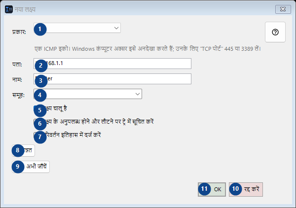
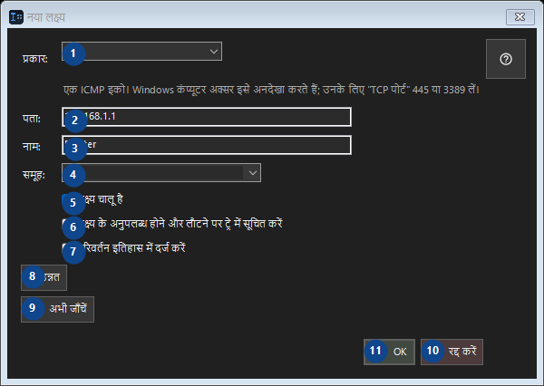

नया लक्ष्य
इसका उपयोग
क्रमांकित विवरण पढ़ें, आवश्यक मान चुनें और विंडो के आदेश से आगे बढ़ें।


उपयोग का क्रम
क्रमांकित विवरण पढ़ें, आवश्यक मान चुनें और विंडो के आदेश से आगे बढ़ें।
तत्व
1. प्रकार:
पास के लेबल के अनुसार मान चुनें या दर्ज करें। आगे बढ़ने से पहले जाँचें।
आपके शॉर्टकट2. प्रकार:
पास के लेबल के अनुसार मान चुनें या दर्ज करें। आगे बढ़ने से पहले जाँचें।
आपके शॉर्टकट3. प्रकार:
पास के लेबल के अनुसार मान चुनें या दर्ज करें। आगे बढ़ने से पहले जाँचें।
आपके शॉर्टकट4. प्रकार:
पास के लेबल के अनुसार मान चुनें या दर्ज करें। आगे बढ़ने से पहले जाँचें।
आपके शॉर्टकट5. लक्ष्य चालू है
बताई गई कार्रवाई के लिए इस आदेश का उपयोग करें। स्वीकार करने से पहले पुष्टि पढ़ें।
आपके शॉर्टकट6. लक्ष्य के अनुपलब्ध होने और लौटने पर ट्रे में सूचित करें
बताई गई कार्रवाई के लिए इस आदेश का उपयोग करें। स्वीकार करने से पहले पुष्टि पढ़ें।
आपके शॉर्टकट7. परिवर्तन इतिहास में दर्ज करें
बताई गई कार्रवाई के लिए इस आदेश का उपयोग करें। स्वीकार करने से पहले पुष्टि पढ़ें।
आपके शॉर्टकट8. ▸ उन्नत
बताई गई कार्रवाई के लिए इस आदेश का उपयोग करें। स्वीकार करने से पहले पुष्टि पढ़ें।
आपके शॉर्टकट9. अभी जाँचें
बताई गई कार्रवाई के लिए इस आदेश का उपयोग करें। स्वीकार करने से पहले पुष्टि पढ़ें।
आपके शॉर्टकट10. रद्द करें
बताई गई कार्रवाई के लिए इस आदेश का उपयोग करें। स्वीकार करने से पहले पुष्टि पढ़ें।
आपके शॉर्टकट11. OK
बताई गई कार्रवाई के लिए इस आदेश का उपयोग करें। स्वीकार करने से पहले पुष्टि पढ़ें।
आपके शॉर्टकट